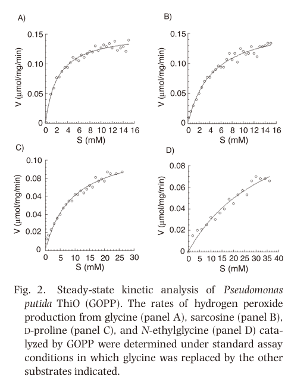

thiO (PP_0612) encodes a monomeric FAD-dependent glycine oxidase (EC 1.4.3.19) of the DAO family / ThiO subfamily that oxidizes glycine to glyoxyl imine and hydrogen peroxide; the glyoxyl imine product feeds thiazole-ring formation in thiamine diphosphate biosynthesis, while otherwise spontaneously hydrolyzing to glyoxylate and ammonia. The purified P. putida KT2440 enzyme is monomeric with a noncovalently bound flavin and, unlike the homotetrameric Bacillus/Geobacillus ThiO enzymes that prefer D-proline, has narrower substrate specificity and prefers glycine (also accepting sarcosine and, weakly, N-ethylglycine and D-proline).
| GO Term | Evidence | Action | Reason |
|---|---|---|---|
|
GO:0005737
cytoplasm
|
IEA
GO_REF:0000118 |
KEEP AS NON CORE |
Summary: ThiO has an automated cytoplasm annotation; no primary localization evidence was found. The falcon deep research confirms that the primary biochemical characterization does not report experimental subcellular localization for this protein, so cytoplasm rests only on the soluble-enzyme inference typical of this DAO-family flavoprotein.
Reason: Retain as a non-core cellular-component annotation for this soluble bacterial enzyme, but do not treat localization as a core function.
Supporting Evidence:
file:PSEPK/thiO/thiO-uniprot.txt
DR GO; GO:0005737; C:cytoplasm; IEA:TreeGrafter.
file:PSEPK/thiO/thiO-deep-research-falcon.md
does **not report experimental subcellular localization** information
|
|
GO:0016491
oxidoreductase activity
|
IEA
GO_REF:0000002 |
MARK AS OVER ANNOTATED |
Summary: Generic oxidoreductase activity is less informative than the specific glycine oxidase activity (GO:0043799). The falcon deep research describes ThiO as a FAD-dependent glycine oxidase catalyzing oxidative deamination of glycine while reducing O2 to H2O2, which is captured precisely by the child term.
Reason: Retain GO:0043799 (glycine oxidase activity) instead, which is the specific, experimentally supported molecular function.
Supporting Evidence:
file:PSEPK/thiO/thiO-uniprot.txt
Catalyzes the oxidation of glycine
file:PSEPK/thiO/thiO-deep-research-falcon.md
catalyzes oxidative deamination of glycine to an imine while reducing O2 to H2O2
|
|
GO:0043799
glycine oxidase activity
|
IEA
GO_REF:0000120 |
ACCEPT |
Summary: ThiO has experimentally supported glycine oxidase activity (EC 1.4.3.19). The falcon deep research confirms the purified P. putida KT2440 enzyme preferentially oxidizes glycine, producing glyoxyl imine and hydrogen peroxide, with the imine spontaneously hydrolyzing to glyoxylate and ammonia.
Reason: Retain as the core molecular function; this is the well-supported specific activity for ThiO.
Supporting Evidence:
file:PSEPK/thiO/thiO-uniprot.txt
Reaction=glycine + O2 + H2O = glyoxylate + H2O2 + NH4(+);
file:PSEPK/thiO/thiO-deep-research-falcon.md
producing **glyoxyl imine** and **hydrogen peroxide**, with glyoxyl imine able to **spontaneously hydrolyze to glyoxylate and ammonia**
PMID:26875494
glycine is its preferred substrate
|
|
GO:0050660
flavin adenine dinucleotide binding
|
IEA
GO_REF:0000002 |
KEEP AS NON CORE |
Summary: FAD binding is supported but ancillary to the oxidase activity. The falcon deep research notes the enzyme exhibits flavoprotein absorption features and contains a noncovalently bound flavin cofactor.
Reason: Retain as cofactor binding supporting the catalytic glycine oxidase activity.
Supporting Evidence:
file:PSEPK/thiO/thiO-uniprot.txt
Name=FAD; Xref=ChEBI:CHEBI:57692;
file:PSEPK/thiO/thiO-deep-research-falcon.md
reported to contain a **noncovalently bound flavin cofactor**
|
|
GO:0009229
thiamine diphosphate biosynthetic process
|
IEA
GO_REF:0000041 |
ACCEPT |
Summary: ThiO contributes glyoxyl imine for thiamine diphosphate biosynthesis. The falcon deep research confirms the primary study links thiO to thiamin (vitamin B1) thiazole biosynthesis, with ThiO supplying the glyoxyl imine needed for formation of the thiazole moiety.
Reason: Retain the thiamine diphosphate biosynthetic process annotation as the core biological process for this enzyme.
Supporting Evidence:
file:PSEPK/thiO/thiO-uniprot.txt
PATHWAY: Cofactor biosynthesis; thiamine diphosphate biosynthesis.
file:PSEPK/thiO/thiO-deep-research-falcon.md
links thiO to **thiamin (vitamin B1) thiazole biosynthesis**, describing ThiO as supplying **glyoxyl imine** needed for formation of the thiazole moiety
|
|
GO:0006520
amino acid metabolic process
|
IDA
PMID:26875494 Purification and Properties of Glycine Oxidase from Pseudomo... |
MARK AS OVER ANNOTATED |
Summary: Amino acid metabolic process is a broad parent term for the glycine oxidation reaction. While technically true (glycine is oxidatively deaminated), it is uninformative relative to the specific glycine oxidase activity and the thiamine diphosphate biosynthetic process that the enzyme serves.
Reason: Retain glycine oxidase activity (GO:0043799) and the thiamine biosynthesis process instead, which capture the specific function more precisely.
Supporting Evidence:
PMID:26875494
glycine is its preferred substrate
|
|
GO:0009228
thiamine biosynthetic process
|
NAS
PMID:26875494 Purification and Properties of Glycine Oxidase from Pseudomo... |
KEEP AS NON CORE |
Summary: Thiamine biosynthetic process is true but less specific than thiamine diphosphate biosynthesis (GO:0009229). The falcon deep research confirms the connection of ThiO activity to thiamin thiazole biosynthesis via provision of the glyoxyl imine intermediate.
Reason: Retain as a non-core parent process; the more specific thiamine diphosphate biosynthetic process is preferred as core.
Supporting Evidence:
file:PSEPK/thiO/thiO-uniprot.txt
glyoxyl imine is used for
file:PSEPK/thiO/thiO-deep-research-falcon.md
connects ThiO activity to **thiamin thiazole biosynthesis** by providing **glyoxyl imine**
|
|
GO:0043799
glycine oxidase activity
|
IDA
PMID:26875494 Purification and Properties of Glycine Oxidase from Pseudomo... |
ACCEPT |
Summary: ThiO has experimentally supported glycine oxidase activity, directly demonstrated by purification and biochemical characterization of the P. putida KT2440 enzyme with glycine as the preferred substrate.
Reason: Retain as the core molecular function; this IDA annotation is directly backed by the biochemical assay in the primary characterization paper.
Supporting Evidence:
PMID:26875494
glycine is its preferred substrate
|
|
GO:0071949
FAD binding
|
IDA
PMID:26875494 Purification and Properties of Glycine Oxidase from Pseudomo... |
KEEP AS NON CORE |
Summary: FAD binding is supported by the biochemical characterization of the purified enzyme, which displays flavoprotein absorption spectra consistent with a bound (noncovalent) flavin cofactor. The cofactor binding is ancillary to, and supports, the catalytic glycine oxidase activity.
Reason: Retain as a non-core cofactor annotation supporting the catalytic activity.
Supporting Evidence:
PMID:26875494
monomeric structure that is distinct from the homotetrameric ThiOs
|
Q: Under which nutrient states is ThiO flux used primarily for thiamine thiazole biosynthesis rather than glycine or sarcosine catabolism?
Suggested experts: Thiamine biosynthesis and flavin oxidase experts
Experiment: Measure thiamine intermediates, glycine oxidation, and growth rescue in thiO deletion and complemented strains under thiamine limitation with glycine, sarcosine, and D-proline supplied separately.
Type: cofactor-pathway metabolomics with enzyme assay
The research report should be a detailed narrative explaining the function, biological processes, and localization of the gene product. Citations should be given for all claims.
You should prioritize authoritative reviews and primary scientific literature when conducting research. You can supplement
this with annotations you find in gene/protein databases, but these can be outdated or inaccurate.
We are specifically interested in the primary function of the gene - for enzymes, what reaction is catalyzed, and what is the substrate specificity? For transporters, what is the substrate? For structural proteins or adapters, what is the broader structural role? For signaling molecules, what is the role in the pathway.
We are interested in where in or outside the cell the gene product carries out its function.
We are also interested in the signaling or biochemical pathways in which the gene functions. We are less interested in broad pleiotropic effects, except where these elucidate the precise role.
Include evidence where possible. We are interested in both experimental evidence as well as inference from structure, evolution, or bioinformatic analysis. Precise studies should be prioritized over high-throughput, where available.
The thiO locus in P. putida KT2440 is annotated as PP_0612 and was experimentally characterized as a glycine oxidase (GO; EC 1.4.3.19); the primary characterization paper explicitly equates the enzyme (GOPP) with UniProt Q88Q83. (equar2015purificationandproperties pages 2-4)
ThiO (GOPP) is a flavoprotein oxidase that catalyzes oxidative deamination of glycine to an imine while reducing O2 to H2O2. In the P. putida KT2440 ThiO study, the authors describe the glycine oxidase reaction as producing glyoxyl imine and hydrogen peroxide, with glyoxyl imine able to spontaneously hydrolyze to glyoxylate and ammonia. (equar2015purificationandproperties pages 1-2)
In contrast to some ThiO homologs that show broad specificity and can behave more like D-proline oxidases, P. putida ThiO is described as having preference for glycine and exhibiting narrower substrate specificity than Bacillus/Geobacillus ThiO homologs. (equar2015purificationandproperties pages 1-2, equar2015purificationandproperties pages 4-5)
Kinetic analyses in the primary study indicate substantial differences in affinity across tested substrates, with much weaker binding/turnover for D-proline than for glycine/sarcosine. (equar2015purificationandproperties pages 2-4, equar2015purificationandproperties media 4adffce9)
P. putida ThiO exhibits absorption features typical of a flavoprotein and is reported to contain a noncovalently bound flavin cofactor (the authors conclude the flavin cofactor is not covalently attached). (equar2015purificationandproperties pages 2-4)
By gel filtration/SDS-PAGE-based estimates, the recombinant enzyme is monomeric, distinguishing it from some characterized ThiO enzymes that are homotetramers. (equar2015purificationandproperties pages 2-4)
Because the ThiO reaction produces H2O2, its activity can couple metabolism to oxidative stress and redox buffering demands; this is a common practical consideration when deploying oxidases in vivo or on electrodes. (equar2015purificationandproperties pages 1-2, jared2024biomimeticlaserinducedgraphene pages 7-9)
The P. putida KT2440 ThiO work links thiO to thiamin (vitamin B1) thiazole biosynthesis, describing ThiO as supplying glyoxyl imine needed for formation of the thiazole moiety. (equar2015purificationandproperties pages 1-2)
More generally, P. putida thiO (PP_0612) is also described in later P. putida metabolic engineering work as encoding a FAD-dependent glycine/D-amino acid oxidase catalyzing glycine oxidation to 2-iminoacetate, which can convert to glyoxylate with release of NH3 while generating H2O2; in that context, ThiO-mediated glycine oxidation is discussed as a potential competing flux affecting engineered C1 assimilation routes. (turlin2025syntheticc1metabolism pages 4-7)
The primary biochemical characterization of P. putida ThiO focuses on purification and in vitro properties and does not report experimental subcellular localization information in the extracted evidence. (equar2015purificationandproperties pages 1-2)
The main quantitative parameters supporting functional annotation (substrate preference, kinetics, and biochemical optima) are summarized below and visually supported by the original kinetic table/curves. (equar2015purificationandproperties pages 2-4, equar2015purificationandproperties media 4adffce9, equar2015purificationandproperties media 68ed7c6f)
| Study / row | System | Key statistic(s) | Value(s) | Notes | Publication date / DOI |
|---|---|---|---|---|---|
| Equar et al. 2015 — biochemical properties | P. putida KT2440 ThiO / GOPP (PP_0612; UniProt Q88Q83) | Oligomeric state; cofactor; cofactor attachment; pH optimum; pH stability; temperature optimum; specific activity | Monomeric; FAD-dependent flavoprotein; flavin not covalently attached; pH optimum ~8.5; stable at pH 8.0–10; temperature optimum ~40°C; specific activity ~0.073 mmol·mg⁻¹·min⁻¹ | Direct primary characterization of the target enzyme; assays included added FAD with activation plateau above 0.1 mM FAD (equar2015purificationandproperties pages 1-2, equar2015purificationandproperties pages 2-4, equar2015purificationandproperties media 4adffce9) | Jan 2015; https://doi.org/10.3177/jnsv.61.506 |
| Equar et al. 2015 — glycine kinetics | P. putida KT2440 ThiO / GOPP | Vmax; Km | Vmax 0.15 mmol·mg⁻¹·min⁻¹; Km 2.43 mM | Preferred substrate; reaction yields glyoxyl imine and H₂O₂, with spontaneous conversion to glyoxylate + NH₃ (equar2015purificationandproperties pages 1-2, equar2015purificationandproperties pages 2-4, equar2015purificationandproperties media 4adffce9) | Jan 2015; https://doi.org/10.3177/jnsv.61.506 |
| Equar et al. 2015 — sarcosine kinetics | P. putida KT2440 ThiO / GOPP | Vmax; Km | Vmax 0.17 mmol·mg⁻¹·min⁻¹; Km 4.86 mM | Sarcosine was also a preferred substrate, but glycine remained central to annotation/function (equar2015purificationandproperties pages 2-4, equar2015purificationandproperties media 4adffce9) | Jan 2015; https://doi.org/10.3177/jnsv.61.506 |
| Equar et al. 2015 — N-ethylglycine kinetics | P. putida KT2440 ThiO / GOPP | Vmax; Km | Vmax 0.11 mmol·mg⁻¹·min⁻¹; Km 7.68 mM | Lower affinity than glycine/sarcosine (equar2015purificationandproperties pages 2-4, equar2015purificationandproperties media 4adffce9) | Jan 2015; https://doi.org/10.3177/jnsv.61.506 |
| Equar et al. 2015 — D-proline kinetics | P. putida KT2440 ThiO / GOPP | Vmax; Km | Vmax 0.13 mmol·mg⁻¹·min⁻¹; Km 31.7 mM | Distinguishes P. putida ThiO from broader-specificity/tetrameric ThiO homologs that prefer D-proline (equar2015purificationandproperties pages 2-4, equar2015purificationandproperties pages 4-5, equar2015purificationandproperties media 4adffce9) | Jan 2015; https://doi.org/10.3177/jnsv.61.506 |
| Zangelmi et al. 2023 — literature values for ThiO | Comparative survey of FAD-dependent small-amine oxidoreductases | Km; kcat/KM | Km 0.9 mM; kcat/KM 340 M⁻¹·s⁻¹ | These are cited literature values for ThiO in a comparative enzymology paper, not new direct measurements on P. putida Q88Q83 within that study (zangelmi2023decipheringtherole pages 8-9) | Nov 2023; https://doi.org/10.1016/j.isci.2023.108108 |
| Jared et al. 2024 — glyphosate biosensor | LIG/PtNP/glycine oxidase electrochemical biosensor | Linear range; LOD; sensitivity; accuracy | Linear range 10–260 µM; LOD 1.15 µM; sensitivity 5.64 nA·µM⁻¹; accuracy up to 97% vs benchtop potentiostat | Source excerpts contain unit inconsistencies in some pages (reported as nM/mM in places), but the abstract-level summary reports µM; value harmonized here to µM and inconsistency noted explicitly (jared2024biomimeticlaserinducedgraphene pages 10-11, jared2024biomimeticlaserinducedgraphene pages 1-2, jared2024biomimeticlaserinducedgraphene pages 7-9) | Jul 2024; https://doi.org/10.1039/d4nh00010b |
| Jared et al. 2024 — field recovery | Biomimetic LIG “collect-and-sense” fern-leaf patch + glycine oxidase sensor | Recovery at 24–48 h; 1 week; 2 weeks post-spray | 73.64 ± 4.94%; 14.02 ± 5.18%; no response / negligible signal | Supports real-world deployment window shortly after spraying / near REI timing (jared2024biomimeticlaserinducedgraphene pages 10-11, jared2024biomimeticlaserinducedgraphene pages 9-10, jared2024biomimeticlaserinducedgraphene pages 11-12) | Jul 2024; https://doi.org/10.1039/d4nh00010b |
| Zribi et al. 2024 — MoS₂-LIG glyphosate biosensor | MoS₂/LIG/glycine oxidase electrochemical biosensor | Linear range; LOD; sensitivity; stability; recovery | Linear range 10–90 µM; LOD 4.0 µM; sensitivity 11 ± 3 nA/µM; stability 21–34 days; agrochemical interference recovery 86.3–111.1%; food-sample recovery 81.3–120% | Validated against LC–MS; negative-potential operation reduced interferent oxidation (zribi2024molybdenumdisulfidediselenidelaserinducedgrapheneglycine pages 1-5, zribi2024molybdenumdisulfidediselenidelaserinducedgrapheneglycine pages 19-24) | Dec 2024; https://doi.org/10.1021/acsami.4c14042 |
| Zribi et al. 2024 — MoSe₂-LIG glyphosate biosensor | MoSe₂/LIG/glycine oxidase electrochemical biosensor | Linear range; LOD; sensitivity; stability; recovery | Linear range 10–90 µM; LOD 6.1 µM; sensitivity 18 ± 2 nA/µM; stability 21–34 days; agrochemical interference recovery 79.3–98.8%; food-sample recovery 81.3–120% | MoSe₂ devices trended toward overprediction in complex food matrices; food-specific modeling factor was introduced (zribi2024molybdenumdisulfidediselenidelaserinducedgrapheneglycine pages 1-5, zribi2024molybdenumdisulfidediselenidelaserinducedgrapheneglycine pages 19-24) | Dec 2024; https://doi.org/10.1021/acsami.4c14042 |
Table: This table compiles the main quantitative functional-annotation data for Pseudomonas putida KT2440 ThiO (Q88Q83/PP_0612) and recent glycine-oxidase application studies. It is useful for quickly linking core enzymology to current biosensor implementations and their measured performance.
A 2023 iScience study surveying recurrent FAD-dependent enzymes (in a different biological context) cites literature values for ThiO oxidizing glycine with KM = 0.9 mM and kcat/KM = 340 M⁻¹·s⁻¹, illustrating how ThiO is used as a benchmark for small-amine oxidation in FAD-enzyme comparisons. (zangelmi2023decipheringtherole pages 8-9)
A 2023 Nature Communications paper reports a noncanonical FAD enzyme (Orf1) that uses glycine oxidation as part of aminoglycoside tailoring, featuring two substrate-binding sites (~13.5 Å apart) and an unusual N–O–S enzyme–substrate linkage enabling reactivity that differs from canonical FAD oxidases. This work expands the mechanistic landscape of glycine-oxidation-dependent biochemistry and includes activity testing of multiple mutants to probe mechanism. (wang2023nformimidoylationiminoacetylationmodificationin pages 1-3, wang2023nformimidoylationiminoacetylationmodificationin pages 3-4)
Although Orf1 is not ThiO, the study explicitly mentions ThiO as a comparator in assays (as indicated in extracted figure legend text), underscoring ThiO’s role as a reference glycine-oxidation enzyme family member in current mechanistic studies. (wang2023nformimidoylationiminoacetylationmodificationin pages 3-4)
A 2024 Nanoscale Horizons study demonstrates a portable, enzyme-based “collect-and-sense” platform for agricultural pesticide monitoring that uses glycine oxidase to generate H2O2 for amperometric detection at Pt nanoparticles on laser-induced graphene (LIG). (jared2024biomimeticlaserinducedgraphene pages 7-9, jared2024biomimeticlaserinducedgraphene pages 1-2)
The reported biosensor performance includes a linear range of 10–260 µM, LOD 1.15 µM, and sensitivity 5.64 nA·µM⁻¹, with a portable potentiostat achieving up to 97% accuracy relative to a benchtop instrument; outdoor sampling showed signal recovery of 73.64 ± 4.94% at 24–48 h post-spray, dropping to 14.02 ± 5.18% at 1 week, and negligible response at 2 weeks—providing practical guidance on operational deployment windows. (jared2024biomimeticlaserinducedgraphene pages 1-2, jared2024biomimeticlaserinducedgraphene pages 10-11, jared2024biomimeticlaserinducedgraphene pages 9-10)
A 2024 ACS Applied Materials & Interfaces paper reports LIG biosensors functionalized with MoS2 or MoSe2 nanosheets and glycine oxidase for glyphosate detection. (zribi2024molybdenumdisulfidediselenidelaserinducedgrapheneglycine pages 1-5)
The study reports a linear range of 10–90 µM and LODs of 4.0 µM (MoS2) and 6.1 µM (MoSe2), and further provides application-level metrics including sensitivities (11 ± 3 nA/µM for MoS2; 18 ± 2 nA/µM for MoSe2), stability over 21–34 days, and recovery ranges in interference and food matrices, with validation against LC–MS. (zribi2024molybdenumdisulfidediselenidelaserinducedgrapheneglycine pages 1-5, zribi2024molybdenumdisulfidediselenidelaserinducedgrapheneglycine pages 19-24)
Primary molecular function. The strongest direct evidence supports annotation of P. putida KT2440 thiO (PP_0612; Q88Q83) as a FAD-dependent glycine oxidase that preferentially oxidizes glycine (and also accepts sarcosine), yielding an imine intermediate and H2O2, with spontaneous conversion to glyoxylate + NH3. (equar2015purificationandproperties pages 1-2, equar2015purificationandproperties pages 2-4)
Substrate specificity and distinguishing features. Compared with some previously characterized ThiO enzymes that are tetrameric and broader-specificity, the P. putida enzyme is monomeric, has narrower substrate specificity, and shows weak activity/low affinity toward D-proline (high KM) relative to glycine. (equar2015purificationandproperties pages 1-2, equar2015purificationandproperties pages 2-4, equar2015purificationandproperties media 4adffce9)
Pathway/process assignment. The primary study connects ThiO activity to thiamin thiazole biosynthesis by providing glyoxyl imine as an intermediate/input to thiazole formation. (equar2015purificationandproperties pages 1-2)
Cellular location. No direct localization evidence was found in the retrieved primary biochemical characterization excerpts; thus, localization should currently be treated as unresolved experimentally for this specific protein in P. putida KT2440 within this evidence set. (equar2015purificationandproperties pages 1-2)
References
(equar2015purificationandproperties pages 2-4): Messele Yohannes EQUAR, Yasushi TANI, and Hisaaki MIHARA. Purification and properties of glycine oxidase from pseudomonas putida kt2440. Journal of nutritional science and vitaminology, 61 6:506-10, Jan 2015. URL: https://doi.org/10.3177/jnsv.61.506, doi:10.3177/jnsv.61.506. This article has 12 citations and is from a peer-reviewed journal.
(equar2015purificationandproperties pages 1-2): Messele Yohannes EQUAR, Yasushi TANI, and Hisaaki MIHARA. Purification and properties of glycine oxidase from pseudomonas putida kt2440. Journal of nutritional science and vitaminology, 61 6:506-10, Jan 2015. URL: https://doi.org/10.3177/jnsv.61.506, doi:10.3177/jnsv.61.506. This article has 12 citations and is from a peer-reviewed journal.
(equar2015purificationandproperties pages 4-5): Messele Yohannes EQUAR, Yasushi TANI, and Hisaaki MIHARA. Purification and properties of glycine oxidase from pseudomonas putida kt2440. Journal of nutritional science and vitaminology, 61 6:506-10, Jan 2015. URL: https://doi.org/10.3177/jnsv.61.506, doi:10.3177/jnsv.61.506. This article has 12 citations and is from a peer-reviewed journal.
(equar2015purificationandproperties media 4adffce9): Messele Yohannes EQUAR, Yasushi TANI, and Hisaaki MIHARA. Purification and properties of glycine oxidase from pseudomonas putida kt2440. Journal of nutritional science and vitaminology, 61 6:506-10, Jan 2015. URL: https://doi.org/10.3177/jnsv.61.506, doi:10.3177/jnsv.61.506. This article has 12 citations and is from a peer-reviewed journal.
(jared2024biomimeticlaserinducedgraphene pages 7-9): Nathan M. Jared, Zachary T. Johnson, Cicero C. Pola, Kristi K. Bez, Krishangee Bez, Shelby L. Hooe, Joyce C. Breger, Emily A. Smith, Igor L. Medintz, Nathan M. Neihart, and Jonathan C. Claussen. Biomimetic laser-induced graphene fern leaf and enzymatic biosensor for pesticide spray collection and monitoring. Nanoscale horizons, 9:1543-1556, Jul 2024. URL: https://doi.org/10.1039/d4nh00010b, doi:10.1039/d4nh00010b. This article has 9 citations and is from a peer-reviewed journal.
(turlin2025syntheticc1metabolism pages 4-7): Justine Turlin, Maria V G Alván-Vargas, Òscar Puiggené, S. Donati, Sebastian Wenk, and P. Nikel. Synthetic c1 metabolism in pseudomonas putida enables strict formatotrophy and methylotrophy via the reductive glycine pathway. mBio, pages e0197625, Aug 2025. URL: https://doi.org/10.1128/mbio.01976-25, doi:10.1128/mbio.01976-25. This article has 8 citations and is from a domain leading peer-reviewed journal.
(equar2015purificationandproperties media 68ed7c6f): Messele Yohannes EQUAR, Yasushi TANI, and Hisaaki MIHARA. Purification and properties of glycine oxidase from pseudomonas putida kt2440. Journal of nutritional science and vitaminology, 61 6:506-10, Jan 2015. URL: https://doi.org/10.3177/jnsv.61.506, doi:10.3177/jnsv.61.506. This article has 12 citations and is from a peer-reviewed journal.
(zangelmi2023decipheringtherole pages 8-9): Erika Zangelmi, Francesca Ruffolo, Tamara Dinhof, Marco Gerdol, Marco Malatesta, Jason P. Chin, Claudio Rivetti, Andrea Secchi, Katharina Pallitsch, and Alessio Peracchi. Deciphering the role of recurrent fad-dependent enzymes in bacterial phosphonate catabolism. Nov 2023. URL: https://doi.org/10.1016/j.isci.2023.108108, doi:10.1016/j.isci.2023.108108. This article has 14 citations and is from a peer-reviewed journal.
(jared2024biomimeticlaserinducedgraphene pages 10-11): Nathan M. Jared, Zachary T. Johnson, Cicero C. Pola, Kristi K. Bez, Krishangee Bez, Shelby L. Hooe, Joyce C. Breger, Emily A. Smith, Igor L. Medintz, Nathan M. Neihart, and Jonathan C. Claussen. Biomimetic laser-induced graphene fern leaf and enzymatic biosensor for pesticide spray collection and monitoring. Nanoscale horizons, 9:1543-1556, Jul 2024. URL: https://doi.org/10.1039/d4nh00010b, doi:10.1039/d4nh00010b. This article has 9 citations and is from a peer-reviewed journal.
(jared2024biomimeticlaserinducedgraphene pages 1-2): Nathan M. Jared, Zachary T. Johnson, Cicero C. Pola, Kristi K. Bez, Krishangee Bez, Shelby L. Hooe, Joyce C. Breger, Emily A. Smith, Igor L. Medintz, Nathan M. Neihart, and Jonathan C. Claussen. Biomimetic laser-induced graphene fern leaf and enzymatic biosensor for pesticide spray collection and monitoring. Nanoscale horizons, 9:1543-1556, Jul 2024. URL: https://doi.org/10.1039/d4nh00010b, doi:10.1039/d4nh00010b. This article has 9 citations and is from a peer-reviewed journal.
(jared2024biomimeticlaserinducedgraphene pages 9-10): Nathan M. Jared, Zachary T. Johnson, Cicero C. Pola, Kristi K. Bez, Krishangee Bez, Shelby L. Hooe, Joyce C. Breger, Emily A. Smith, Igor L. Medintz, Nathan M. Neihart, and Jonathan C. Claussen. Biomimetic laser-induced graphene fern leaf and enzymatic biosensor for pesticide spray collection and monitoring. Nanoscale horizons, 9:1543-1556, Jul 2024. URL: https://doi.org/10.1039/d4nh00010b, doi:10.1039/d4nh00010b. This article has 9 citations and is from a peer-reviewed journal.
(jared2024biomimeticlaserinducedgraphene pages 11-12): Nathan M. Jared, Zachary T. Johnson, Cicero C. Pola, Kristi K. Bez, Krishangee Bez, Shelby L. Hooe, Joyce C. Breger, Emily A. Smith, Igor L. Medintz, Nathan M. Neihart, and Jonathan C. Claussen. Biomimetic laser-induced graphene fern leaf and enzymatic biosensor for pesticide spray collection and monitoring. Nanoscale horizons, 9:1543-1556, Jul 2024. URL: https://doi.org/10.1039/d4nh00010b, doi:10.1039/d4nh00010b. This article has 9 citations and is from a peer-reviewed journal.
(zribi2024molybdenumdisulfidediselenidelaserinducedgrapheneglycine pages 1-5): Rayhane Zribi, Zachary T. Johnson, Griffin Ellis, Christopher Banwart, Jemima Opare-Addo, Shelby L. Hooe, Joyce Breger, Antonino Foti, Pietro G. Gucciardi, Emily A. Smith, Carmen L. Gomes, Igor L. Medintz, Giovanni Neri, and Jonathan C. Claussen. Molybdenum disulfide/diselenide-laser-induced graphene-glycine oxidase composite for electrochemical sensing of glyphosate. ACS applied materials & interfaces, 17:247-259, Dec 2024. URL: https://doi.org/10.1021/acsami.4c14042, doi:10.1021/acsami.4c14042. This article has 14 citations and is from a domain leading peer-reviewed journal.
(zribi2024molybdenumdisulfidediselenidelaserinducedgrapheneglycine pages 19-24): Rayhane Zribi, Zachary T. Johnson, Griffin Ellis, Christopher Banwart, Jemima Opare-Addo, Shelby L. Hooe, Joyce Breger, Antonino Foti, Pietro G. Gucciardi, Emily A. Smith, Carmen L. Gomes, Igor L. Medintz, Giovanni Neri, and Jonathan C. Claussen. Molybdenum disulfide/diselenide-laser-induced graphene-glycine oxidase composite for electrochemical sensing of glyphosate. ACS applied materials & interfaces, 17:247-259, Dec 2024. URL: https://doi.org/10.1021/acsami.4c14042, doi:10.1021/acsami.4c14042. This article has 14 citations and is from a domain leading peer-reviewed journal.
(wang2023nformimidoylationiminoacetylationmodificationin pages 1-3): Yung-Lin Wang, Chin-Yuan Chang, Ning-Shian Hsu, I-Wen Lo, Kuan-Hung Lin, Chun-Liang Chen, Chi-Fon Chang, Zhe-Chong Wang, Yasushi Ogasawara, Tohru Dairi, Chitose Maruyama, Yoshimitsu Hamano, and Tsung-Lin Li. N-formimidoylation/-iminoacetylation modification in aminoglycosides requires fad-dependent and ligand-protein nos bridge dual chemistry. Nature Communications, May 2023. URL: https://doi.org/10.1038/s41467-023-38218-w, doi:10.1038/s41467-023-38218-w. This article has 8 citations and is from a highest quality peer-reviewed journal.
(wang2023nformimidoylationiminoacetylationmodificationin pages 3-4): Yung-Lin Wang, Chin-Yuan Chang, Ning-Shian Hsu, I-Wen Lo, Kuan-Hung Lin, Chun-Liang Chen, Chi-Fon Chang, Zhe-Chong Wang, Yasushi Ogasawara, Tohru Dairi, Chitose Maruyama, Yoshimitsu Hamano, and Tsung-Lin Li. N-formimidoylation/-iminoacetylation modification in aminoglycosides requires fad-dependent and ligand-protein nos bridge dual chemistry. Nature Communications, May 2023. URL: https://doi.org/10.1038/s41467-023-38218-w, doi:10.1038/s41467-023-38218-w. This article has 8 citations and is from a highest quality peer-reviewed journal.

id: Q88Q83
gene_symbol: thiO
product_type: PROTEIN
status: IN_PROGRESS
taxon:
id: NCBITaxon:160488
label: Pseudomonas putida (strain ATCC 47054 / DSM 6125 / CFBP 8728 / NCIMB 11950 / KT2440)
description: thiO (PP_0612) encodes a monomeric FAD-dependent glycine oxidase (EC 1.4.3.19) of the DAO family / ThiO subfamily that oxidizes glycine to glyoxyl imine and hydrogen peroxide; the glyoxyl imine product feeds thiazole-ring formation in thiamine diphosphate biosynthesis, while otherwise spontaneously hydrolyzing to glyoxylate and ammonia. The purified P. putida KT2440 enzyme is monomeric with a noncovalently bound flavin and, unlike the homotetrameric Bacillus/Geobacillus ThiO enzymes that prefer D-proline, has narrower substrate specificity and prefers glycine (also accepting sarcosine and, weakly, N-ethylglycine and D-proline).
existing_annotations:
- term:
id: GO:0005737
label: cytoplasm
evidence_type: IEA
original_reference_id: GO_REF:0000118
review:
summary: ThiO has an automated cytoplasm annotation; no primary localization evidence was found. The falcon deep research confirms that the primary biochemical characterization does not report experimental subcellular localization for this protein, so cytoplasm rests only on the soluble-enzyme inference typical of this DAO-family flavoprotein.
action: KEEP_AS_NON_CORE
reason: Retain as a non-core cellular-component annotation for this soluble bacterial enzyme, but do not treat localization as a core function.
supported_by:
- reference_id: file:PSEPK/thiO/thiO-uniprot.txt
supporting_text: 'DR GO; GO:0005737; C:cytoplasm; IEA:TreeGrafter.'
- reference_id: file:PSEPK/thiO/thiO-deep-research-falcon.md
supporting_text: does **not report experimental subcellular localization** information
- term:
id: GO:0016491
label: oxidoreductase activity
evidence_type: IEA
original_reference_id: GO_REF:0000002
review:
summary: Generic oxidoreductase activity is less informative than the specific glycine oxidase activity (GO:0043799). The falcon deep research describes ThiO as a FAD-dependent glycine oxidase catalyzing oxidative deamination of glycine while reducing O2 to H2O2, which is captured precisely by the child term.
action: MARK_AS_OVER_ANNOTATED
reason: Retain GO:0043799 (glycine oxidase activity) instead, which is the specific, experimentally supported molecular function.
supported_by:
- reference_id: file:PSEPK/thiO/thiO-uniprot.txt
supporting_text: Catalyzes the oxidation of glycine
- reference_id: file:PSEPK/thiO/thiO-deep-research-falcon.md
supporting_text: catalyzes oxidative deamination of glycine to an imine while reducing O2 to H2O2
- term:
id: GO:0043799
label: glycine oxidase activity
evidence_type: IEA
original_reference_id: GO_REF:0000120
review:
summary: ThiO has experimentally supported glycine oxidase activity (EC 1.4.3.19). The falcon deep research confirms the purified P. putida KT2440 enzyme preferentially oxidizes glycine, producing glyoxyl imine and hydrogen peroxide, with the imine spontaneously hydrolyzing to glyoxylate and ammonia.
action: ACCEPT
reason: Retain as the core molecular function; this is the well-supported specific activity for ThiO.
supported_by:
- reference_id: file:PSEPK/thiO/thiO-uniprot.txt
supporting_text: Reaction=glycine + O2 + H2O = glyoxylate + H2O2 + NH4(+);
- reference_id: file:PSEPK/thiO/thiO-deep-research-falcon.md
supporting_text: producing **glyoxyl imine** and **hydrogen peroxide**, with glyoxyl imine able to **spontaneously hydrolyze to glyoxylate and ammonia**
- reference_id: PMID:26875494
supporting_text: glycine is its preferred substrate
reference_section_type: ABSTRACT
- term:
id: GO:0050660
label: flavin adenine dinucleotide binding
evidence_type: IEA
original_reference_id: GO_REF:0000002
review:
summary: FAD binding is supported but ancillary to the oxidase activity. The falcon deep research notes the enzyme exhibits flavoprotein absorption features and contains a noncovalently bound flavin cofactor.
action: KEEP_AS_NON_CORE
reason: Retain as cofactor binding supporting the catalytic glycine oxidase activity.
supported_by:
- reference_id: file:PSEPK/thiO/thiO-uniprot.txt
supporting_text: Name=FAD; Xref=ChEBI:CHEBI:57692;
- reference_id: file:PSEPK/thiO/thiO-deep-research-falcon.md
supporting_text: reported to contain a **noncovalently bound flavin cofactor**
- term:
id: GO:0009229
label: thiamine diphosphate biosynthetic process
evidence_type: IEA
original_reference_id: GO_REF:0000041
review:
summary: ThiO contributes glyoxyl imine for thiamine diphosphate biosynthesis. The falcon deep research confirms the primary study links thiO to thiamin (vitamin B1) thiazole biosynthesis, with ThiO supplying the glyoxyl imine needed for formation of the thiazole moiety.
action: ACCEPT
reason: Retain the thiamine diphosphate biosynthetic process annotation as the core biological process for this enzyme.
supported_by:
- reference_id: file:PSEPK/thiO/thiO-uniprot.txt
supporting_text: 'PATHWAY: Cofactor biosynthesis; thiamine diphosphate biosynthesis.'
- reference_id: file:PSEPK/thiO/thiO-deep-research-falcon.md
supporting_text: links thiO to **thiamin (vitamin B1) thiazole biosynthesis**, describing ThiO as supplying **glyoxyl imine** needed for formation of the thiazole moiety
- term:
id: GO:0006520
label: amino acid metabolic process
evidence_type: IDA
original_reference_id: PMID:26875494
review:
summary: Amino acid metabolic process is a broad parent term for the glycine oxidation reaction. While technically true (glycine is oxidatively deaminated), it is uninformative relative to the specific glycine oxidase activity and the thiamine diphosphate biosynthetic process that the enzyme serves.
action: MARK_AS_OVER_ANNOTATED
reason: Retain glycine oxidase activity (GO:0043799) and the thiamine biosynthesis process instead, which capture the specific function more precisely.
supported_by:
- reference_id: PMID:26875494
supporting_text: glycine is its preferred substrate
reference_section_type: ABSTRACT
- term:
id: GO:0009228
label: thiamine biosynthetic process
evidence_type: NAS
original_reference_id: PMID:26875494
review:
summary: Thiamine biosynthetic process is true but less specific than thiamine diphosphate biosynthesis (GO:0009229). The falcon deep research confirms the connection of ThiO activity to thiamin thiazole biosynthesis via provision of the glyoxyl imine intermediate.
action: KEEP_AS_NON_CORE
reason: Retain as a non-core parent process; the more specific thiamine diphosphate biosynthetic process is preferred as core.
supported_by:
- reference_id: file:PSEPK/thiO/thiO-uniprot.txt
supporting_text: glyoxyl imine is used for
- reference_id: file:PSEPK/thiO/thiO-deep-research-falcon.md
supporting_text: connects ThiO activity to **thiamin thiazole biosynthesis** by providing **glyoxyl imine**
- term:
id: GO:0043799
label: glycine oxidase activity
evidence_type: IDA
original_reference_id: PMID:26875494
review:
summary: ThiO has experimentally supported glycine oxidase activity, directly demonstrated by purification and biochemical characterization of the P. putida KT2440 enzyme with glycine as the preferred substrate.
action: ACCEPT
reason: Retain as the core molecular function; this IDA annotation is directly backed by the biochemical assay in the primary characterization paper.
supported_by:
- reference_id: PMID:26875494
supporting_text: glycine is its preferred substrate
reference_section_type: ABSTRACT
- term:
id: GO:0071949
label: FAD binding
evidence_type: IDA
original_reference_id: PMID:26875494
review:
summary: FAD binding is supported by the biochemical characterization of the purified enzyme, which displays flavoprotein absorption spectra consistent with a bound (noncovalent) flavin cofactor. The cofactor binding is ancillary to, and supports, the catalytic glycine oxidase activity.
action: KEEP_AS_NON_CORE
reason: Retain as a non-core cofactor annotation supporting the catalytic activity.
supported_by:
- reference_id: PMID:26875494
supporting_text: monomeric structure that is distinct from the homotetrameric ThiOs
reference_section_type: ABSTRACT
references:
- id: GO_REF:0000118
title: TreeGrafter-generated Gene Ontology annotations based on phylogenetic placement.
findings:
- supporting_text: 'DR GO; GO:0005737; C:cytoplasm; IEA:TreeGrafter.'
reference_section_type: OTHER
- id: GO_REF:0000002
title: Gene Ontology annotation through association of InterPro records with GO terms.
findings:
- supporting_text: 'DR GO; GO:0043799; F:glycine oxidase activity; IDA:UniProtKB.'
reference_section_type: OTHER
- id: GO_REF:0000120
title: Combined automated GO annotation using multiple IEA methods.
findings:
- supporting_text: 'DR GO; GO:0043799; F:glycine oxidase activity; IDA:UniProtKB.'
reference_section_type: OTHER
- id: GO_REF:0000041
title: Gene Ontology annotation based on UniProtKB keyword mapping.
findings:
- supporting_text: 'DR GO; GO:0009229; P:thiamine diphosphate biosynthetic process; IEA:UniProtKB-UniPathway.'
reference_section_type: OTHER
- id: PMID:26875494
title: Purification and Properties of Glycine Oxidase from Pseudomonas putida KT2440.
findings:
- supporting_text: Glycine oxidase, encoded by the thiO gene, participates in the biosynthesis of
reference_section_type: ABSTRACT
- supporting_text: glycine is its preferred substrate
reference_section_type: ABSTRACT
- supporting_text: monomeric structure that is distinct from the homotetrameric ThiOs
reference_section_type: ABSTRACT
- id: file:PSEPK/thiO/thiO-uniprot.txt
title: UniProtKB reviewed entry for thiO
findings:
- supporting_text: Catalyzes the oxidation of glycine, leading to glyoxyl imine
reference_section_type: OTHER
- supporting_text: Belongs to the DAO family. ThiO subfamily.
reference_section_type: OTHER
- id: file:PSEPK/thiO/thiO-deep-research-falcon.md
title: Falcon deep research report on thiO (PSEPK / Q88Q83 / PP_0612)
findings:
- supporting_text: primary characterization paper explicitly equates the enzyme (GOPP) with **UniProt Q88Q83**
reference_section_type: OTHER
- supporting_text: catalyzes oxidative deamination of glycine to an imine while reducing O2 to H2O2
reference_section_type: OTHER
- supporting_text: producing **glyoxyl imine** and **hydrogen peroxide**, with glyoxyl imine able to **spontaneously hydrolyze to glyoxylate and ammonia**
reference_section_type: OTHER
- supporting_text: P. putida* ThiO is described as having **preference for glycine** and exhibiting **narrower substrate specificity**
reference_section_type: OTHER
- supporting_text: reported to contain a **noncovalently bound flavin cofactor**
reference_section_type: OTHER
- supporting_text: the recombinant enzyme is **monomeric**
reference_section_type: OTHER
- supporting_text: links thiO to **thiamin (vitamin B1) thiazole biosynthesis**, describing ThiO as supplying **glyoxyl imine** needed for formation of the thiazole moiety
reference_section_type: OTHER
- supporting_text: encoding a **FAD-dependent glycine/D-amino acid oxidase** catalyzing glycine oxidation to **2-iminoacetate**
reference_section_type: OTHER
- supporting_text: does **not report experimental subcellular localization** information
reference_section_type: OTHER
- supporting_text: the *P. putida* enzyme is **monomeric**, has **narrower substrate specificity**, and shows **weak activity/low affinity** toward D-proline
reference_section_type: OTHER
core_functions:
- description: ThiO oxidizes glycine to glyoxyl imine, hydrogen peroxide, and ammonia, supplying glyoxyl imine for thiamine diphosphate biosynthesis.
molecular_function:
id: GO:0043799
label: glycine oxidase activity
directly_involved_in:
- id: GO:0009229
label: thiamine diphosphate biosynthetic process
supported_by:
- reference_id: file:PSEPK/thiO/thiO-uniprot.txt
supporting_text: Catalyzes the oxidation of glycine, leading to glyoxyl imine
- reference_id: file:PSEPK/thiO/thiO-uniprot.txt
supporting_text: Reaction=glycine + O2 + H2O = glyoxylate + H2O2 + NH4(+);
- reference_id: file:PSEPK/thiO/thiO-deep-research-falcon.md
supporting_text: producing **glyoxyl imine** and **hydrogen peroxide**, with glyoxyl imine able to **spontaneously hydrolyze to glyoxylate and ammonia**
- reference_id: file:PSEPK/thiO/thiO-deep-research-falcon.md
supporting_text: links thiO to **thiamin (vitamin B1) thiazole biosynthesis**, describing ThiO as supplying **glyoxyl imine** needed for formation of the thiazole moiety
- reference_id: PMID:26875494
supporting_text: glycine is its preferred substrate
reference_section_type: ABSTRACT
proposed_new_terms: []
suggested_questions:
- question: Under which nutrient states is ThiO flux used primarily for thiamine thiazole biosynthesis rather than glycine or sarcosine catabolism?
experts:
- Thiamine biosynthesis and flavin oxidase experts
suggested_experiments:
- description: Measure thiamine intermediates, glycine oxidation, and growth rescue in thiO deletion and complemented strains under thiamine limitation with glycine, sarcosine, and D-proline supplied separately.
experiment_type: cofactor-pathway metabolomics with enzyme assay
{kind=link}